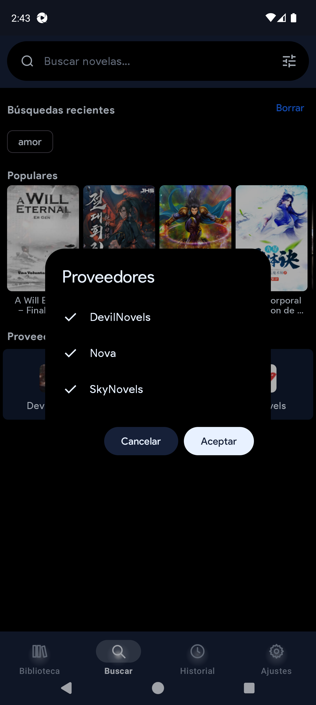
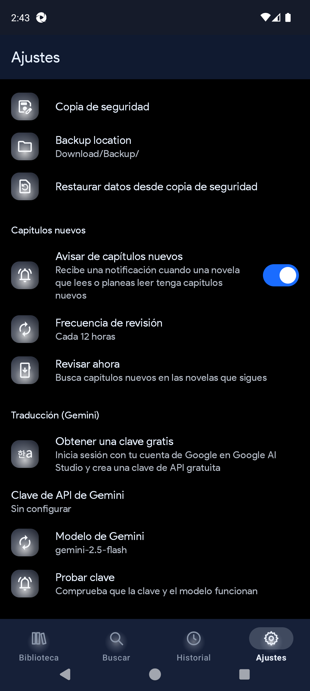
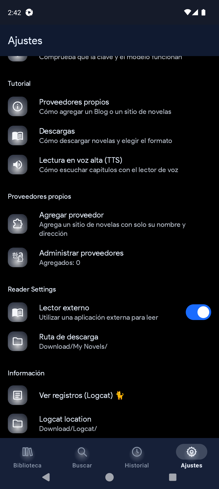
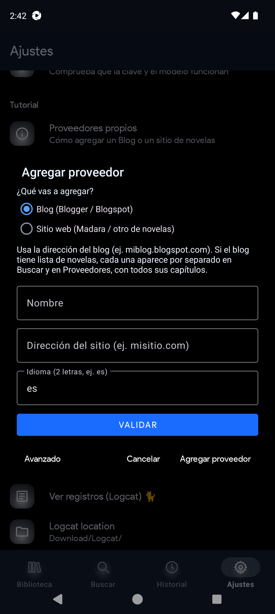
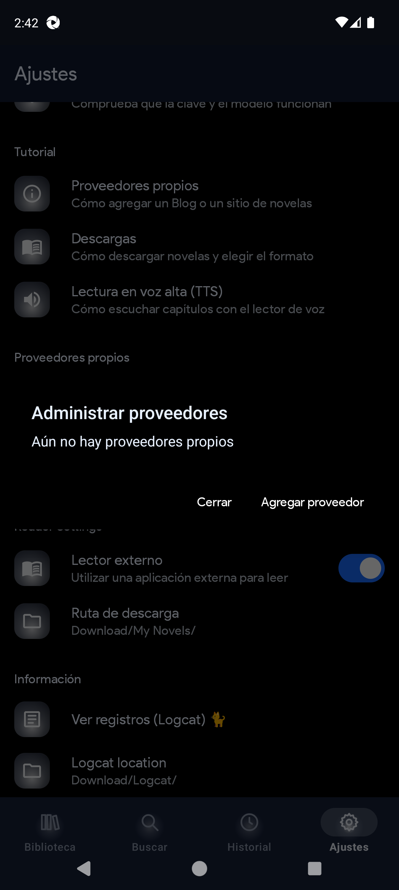

1. Introducción y qué es Ultimate
QuickNovel Ultimate es una app Android para buscar, leer, escuchar (TTS) y descargar novelas desde proveedores web, y también para importar EPUB/PDF propios.
Es un fork de QuickNovel con identidad propia:
- Marca Ultimate con acentos (Blue…Soft) e iconos A–J independientes.
- Por defecto: modo oscuro + tema Ultimate Blue.
- Package distinto: com.lagradost.quicknovel.ultimate (no confundir con la app original com.lagradost.quicknovel).
- Historial separado en Leyendo / Visitadas.
- Import-B en Biblioteca.
- Proveedores propios y Plugins (LNReader).
- Lector con carga Glyph Pulse (本), textos en el idioma de la app.
- TTS priorizando voces neuronales Piper/Sherpa.
- Búsqueda que, por defecto, bloquea caracteres especiales (configurable).
2. Instalación y primeras pantallas
Requisitos
- Android 6.0 o superior.
- Internet para buscar/descargar desde proveedores.
- Opcional: motor Sherpa TTS / Piper para mejor voz en español/inglés.
Instalar esta carpeta
- Desinstala versiones viejas de Ultimate y, si existe, la QuickNovel stock.
- Instala QuickNovel-Ultimate-1.2.3-universal.apk.
- Al abrir, concede notificaciones si las pide.
- Si aparece “actualización” a 3.x de LagradOst → Skip update / Cancelar (no instalar ese APK sobre Ultimate).
3. Mapa de navegación (barra inferior)
Casi todo parte de estos cinco tabs:
| Tab | Para qué sirve | Primera cosa que verás |
|---|---|---|
| Biblioteca | Tus libros locales (descargados o importados) | Buscar mis novelas, Import-B, listado |
| Buscar | Buscar en internet / proveedores | Campo “Buscar novelas…”, tune de proveedores, Populares |
| Historial | Lo que abriste o estás leyendo | Pills Leyendo / Visitadas |
| Ajustes | Configurar toda la app | Grupos: general, tema, app, capítulos nuevos, traducción, tutorial, proveedores propios, lector, info |
| Secciones | Organizar la biblioteca en estantes | Secciones / estantes personalizados |

4. Módulo Biblioteca
Dónde: tab Biblioteca. En código: ui/download/DownloadScreen.kt.
Elementos de la pantalla
- Buscar mis novelas… — filtra solo lo que ya tienes en biblioteca (barra fijada al hacer scroll).
- Import-B — zona “Importar un libro / EPUB o PDF · toca para elegir”. Abre el selector del sistema.
- + — menú de importar uno o varios.
- Vista lista/cuadrícula — cambia cómo se muestran las portadas.
- Continuar leyendo — acceso rápido a la novela en curso.
- Seguir — seguimiento / actualizaciones de capítulos (junto con notificaciones en Ajustes).
- Todas las novelas — listado completo con progreso “Capítulo X de Y”.
- FAB Ordenar — criterios de orden (nombre, descargas, porcentaje, etc.).
Qué puedes hacer desde una novela de biblioteca
- Abrir / Leer (lector interno o externo según ajuste).
- Actualizar capítulos nuevos.
- Borrar descarga local (no borra necesariamente el historial de lectura).
- Generar o abrir EPUB/PDF exportado según flujos de descarga.
5. Módulo Buscar
Dónde: tab Buscar. Código: ui/search/SearchScreen.kt.
Partes de la pantalla
- Campo Buscar novelas….
- Icono Proveedores (tune) → diálogo multi-select para activar/desactivar fuentes.
- Búsquedas recientes (chips) y botón Borrar.
- Populares — carrusel de recomendaciones del proveedor activo.
- Tras buscar: chips Todos y por cada proveedor con resultados; grid de portadas.
Caracteres especiales
Por defecto el campo no acepta símbolos tipo @ # $ % ! (sí letras con tilde, números, espacios, guion y apóstrofe). Para permitirlos: Ajustes → Permitir caracteres especiales en búsqueda.
Multi-select de proveedores
- En Buscar toca el icono de proveedores.
- Marca solo las fuentes que quieras (puedes dejar varias).
- Confirma con OK / Aceptar.
- Busca: los chips de resultados deberían limitarse a esa selección.


6. Módulo Historial
Dónde: tab Historial. Código: ui/history/HistoryScreen.kt.
- Pills Leyendo y Visitadas.
- Agrupación temporal: Hoy, Ayer, Esta semana, Antes.
- Búsqueda dentro del historial.
- Opciones para limpiar / borrar entradas.
Estado vacío: mensaje indicando que aún no hay novelas recientes.
7. Módulo Secciones
Dónde: tab Secciones (solo en Ultimate; no existe igual en la app stock).
- Organiza novelas de biblioteca en estantes / secciones (por ejemplo género, pendientes, favoritas).
- Usa la misma familia visual Fire que el resto de la app.
- Sirve para no mezclar todo en un solo listado plano de Biblioteca.

8. Módulo Ajustes (todas las secciones)
Dónde: tab Ajustes. Código: ui/settings/SettingScreen.kt.
Los ajustes están agrupados. Desplázate de arriba a abajo:
8.1 Ajustes generales
| Opción | Qué hace |
|---|---|
| Idioma / Locale | Idioma de la interfaz (es, en, tr, ru…). |
| Idiomas del proveedor | Qué idiomas de fuentes no inglesas se muestran. |
| Mostrar proveedores en inglés | Off por defecto; actívalo para listar fuentes EN. |
| Permitir caracteres especiales en búsqueda | Off por defecto; permite @#$% etc. en Buscar. |
| Proveedores (lista) | Multi-select de qué proveedores integrados están activos. |
8.2 Tema
- Modo oscuro — ON por defecto (superficie oscura). Off = superficie clara; el acento Ultimate no cambia.
- Tema Ultimate — acento de UI/menú/secciones (Ultimate Blue por defecto; también Black, Lava, Emerald, Violet, Gold, Cyan, Rose, Midnight, Crimson, Soft). El launcher se actualiza al reiniciar en frío.
- Tema de iconos — tratamiento visual A–J (Aura, Halo, Flat…), independiente del acento.
- Estilo del menú inferior (A/B/C/D).
- Estilo de los ajustes (lista / mosaico / etc.).
- Formato de rating.
8.3 Ajustes de la app
- Comprobar actualización (versión actual 1.2.3).
- Instalador de APK.
- Mostrar actualizaciones de app (en Ultimate conviene dejarlo off para no bajar el APK stock).
- Copia de seguridad y ruta de backup.
- Restaurar desde archivo.
8.4 Nuevos capítulos
- Notificar capítulos nuevos de novelas seguidas.
- Frecuencia (cada 3 / 6 / 12 / 24 h).
- Comprobar ahora.
8.5 Traducción (Gemini)
- Obtener clave API (abre el sitio de Google AI).
- Pegar API key.
- Elegir modelo Gemini.
- Probar clave.
Sirve para flujos de traducción al descargar/leer cuando está configurado.
8.6 Tutorial
Tres entradas con diálogos de ayuda: Proveedores propios, Descargas, TTS (detalle en sección 12).
8.7 Proveedores propios
Ver sección 9 completa.
8.8 Reader Settings
- Lector externo — usar otra app para abrir el libro.
- Ruta de descarga — carpeta donde se guardan EPUB/PDF (ej. Download/My Novels/).
8.9 Información
- Ver registros (Logcat) — útil para depurar; guardar / copiar / limpiar.
- Ubicación del logcat.

9. Proveedores propios (agregar / administrar / avanzado)
Este es el módulo para añadir fuentes manualmente cuando el sitio no viene de fábrica.
Dónde: Ajustes → grupo Proveedores propios.
Código: CustomProviderDialogs.kt, CustomProviders.kt, providers/CustomProvider*.kt.
9.1 Agregar proveedor (modo simple)
- Ajustes → Agregar proveedor.
- Elige tipo:
- Blog (Blogger / Blogspot) — ej. miblog.blogspot.com. Si hay “Lista de Novelas”, cada novela aparece por separado en Buscar/Proveedores con sus capítulos.
- Sitio web (Madara / otro) — sitios WordPress/Madara de novelas; la app prueba plantillas habituales.
- Escribe Nombre, Dirección del sitio e idioma (2 letras, ej. es).
- Toca VALIDAR y espera (puede tardar unos segundos).
- Si es OK, toca Agregar proveedor.

9.2 Si la detección automática falla
- En el mismo diálogo toca Avanzado.
- Rellena selectores CSS a mano (o usa plantilla Madara).
- Usa Probar con una palabra de prueba.
- Guarda cuando búsqueda → novela → capítulo respondan OK.
9.3 Campos del modo Avanzado (qué es cada uno)
| Campo | Significado |
|---|---|
| Nombre | Nombre único del proveedor (no repetir uno existente). |
| URL del sitio | Base https://… |
| Idioma | Código de 2 letras. |
| URL de búsqueda | Debe incluir {query} donde va el texto buscado. |
| Selector de cada resultado | CSS del ítem en la lista de búsqueda. |
| Enlace dentro del resultado | Normalmente a; vacío = a. |
| Portada en resultado | Opcional. |
| Título / autor / portada / sinopsis de novela | Selectores en la página de la novela. |
| Enlaces de capítulos | CSS de cada capítulo. |
| Texto del capítulo | Contenedor del HTML del capítulo. |
| Capítulos más nuevos primero | Checkbox si el sitio lista al revés. |
| Ajax Madara | Checkbox para cargar capítulos vía ajax típico Madara. |
| Palabra para probar | Query de test (en blogs suele usarse algo corto). |
| Rellenar Madara | Autocompleta selectores típicos Madara. |
9.4 Administrar proveedores
- Ajustes → Administrar proveedores.
- Si no hay ninguno: mensaje “Aún no hay proveedores propios” y botón para agregar.
- Si hay lista: toca uno → Editar o Eliminar.
- Eliminar quita el proveedor; las novelas ya descargadas se conservan.

9.5 Dónde aparece después de agregarlo
- En el diálogo de proveedores de Buscar (multi-select).
- En la lista de proveedores activos de Ajustes.
- Puedes buscar novelas de ese sitio igual que con los integrados.
10. Detalle de novela, descarga y export
Al tocar un resultado de Buscar (o una tarjeta) entras al detalle:
- Portada, título, autor, sinopsis, lista de capítulos.
- Leer en línea — abre el lector sin bajar todo.
- Descargar — diálogo de descarga.
Diálogo de descarga (conceptos)
- Todos los capítulos o un rango (ej. 1-10, 15).
- Capítulos por archivo: vacío = un solo EPUB/PDF; número (ej. 50) = varios archivos.
- Formatos: capítulos sueltos / EPUB / PDF según el flujo actual.
- Vista previa editable en algunos flujos de export.
- Al terminar: aparece en Biblioteca; Actualizar trae capítulos nuevos; Borrar limpia archivos locales.
11. Lector y TTS
Lector
- Muestra el texto del capítulo; toca el centro para mostrar/ocultar barras.
- Al cargar un capítulo aparece Glyph Pulse: kanji 本 con halo, título del capítulo y “Cargando capítulo…” (en el idioma de la app). Nunca muestra la URL cruda.
- Barra inferior típica: capítulos, TTS, ajustes del lector (fuente, tema, voz…).
- Si “Lector externo” está activo, puede ofrecer abrir con otra app (sobre todo PDF/EPUB).
TTS (lectura en voz alta)
- Abre un capítulo.
- Toca el icono de altavoz.
- Barra TTS: Reproducir/Pausa, Detener, frase anterior/siguiente.
- Ajustes del lector → pestaña Voz: idioma, voz, velocidad, tono, temporizador de sueño, bloquear área TTS.
- También se controla desde la notificación con pantalla apagada.
Voces recomendadas: Piper “Dave” (es) y “Lessac” (en) vía Sherpa-ONNX. Si falla, instala datos de Google TTS / idioma del sistema.
12. Tutoriales oficiales de la app (co-tutorial)
En Ajustes → Tutorial hay tres guías embebidas (los mismos textos de la app):
12.1 Proveedores propios
- Configuración → Proveedores propios → Agregar proveedor.
- Elige Blog o Sitio web; pon nombre y URL.
- Espera la verificación; si funciona, aparece en Buscar y Proveedores.
- Administrar para editar/borrar; Avanzado para CSS manual.
12.2 Descargas
- Abre una novela → Descargar.
- Todos o rango (1-10, 15…).
- Capítulos por archivo opcional.
- Ruta/formato en Ajustes → lector / ruta de descarga.
- Abre desde Biblioteca; Actualizar / Borrar según necesites.
12.3 Lectura en voz alta (TTS)
- Capítulo → altavoz.
- Usa barra TTS y notificación.
- Ajusta voz en engranaje → Voz.
- Instala Sherpa/Piper para mejor calidad.
Esta documentación amplía esos tutoriales con el mapa de pantallas, campos avanzados y el resto de módulos que no caben en un diálogo.
13. Flujos de uso paso a paso (para principiantes)
A) Primera búsqueda y lectura
- Tab Buscar → (opcional) elige proveedores → escribe título → buscar.
- Toca una portada → Leer en línea o un capítulo.
- Usa TTS si quieres escuchar.
B) Descargar para offline
- Detalle → Descargar → elige rango/lotes → confirma.
- Espera → Biblioteca → abrir.
C) Importar tu EPUB/PDF
- Biblioteca → Importar un libro → elige archivo.
- Aparece en el listado → Leer.
D) Añadir un blog o sitio tuyo
- Ajustes → Agregar proveedor → Blog o Sitio → VALIDAR → Agregar.
- Buscar → activa ese proveedor → busca.
E) Seguir novedades
- Marca Seguir en biblioteca / novela.
- Ajustes → Nuevos capítulos → notificar + frecuencia.
14. Galería de capturas


15. Cómo crear bugs para entregar en Word
Plantilla: plantillas/Plantilla-Reporte-Bugs.docx.
Checklist antes de reportar
- Confirmar APK 1.2.3 (Ultimate, no stock).
- Anotar dispositivo/emulador y Android.
- Reproducir ≥ 2 veces.
- Captura o video + módulo exacto (Biblioteca, Buscar, Proveedores propios, TTS…).
Campos obligatorios por bug
| Campo | Ejemplo |
|---|---|
| ID | BUG-012 |
| Título | Proveedores propios: VALIDAR no termina en blogspot X |
| Severidad | Alta |
| Módulo | Proveedores propios |
| Precondiciones | Sin proveedores propios previos; red OK |
| Pasos | 1. Ajustes→Agregar proveedor 2. Tipo Blog 3. URL … 4. VALIDAR |
| Esperado / Actual | Mensaje OK vs error … |
| Adjuntos | imagenes/evidencia-012.png |
Guarda el archivo como Bugs-QuickNovel-Ultimate-1.2.3-AAAA-MM-DD.docx.
16. Pruebas automatizadas
- Unitarias: ./gradlew :app:testDebugUnitTest
- E2E: carpeta e2e/ (specs 01–09: biblioteca, nav, search, historial, ajustes, import, reader/TTS con seed, providers, special chars).
- Allure: e2e/allure-report
17. Anexos
- Repo: https://github.com/RaffyRod/NovelReader
- Upstream: https://github.com/LagradOst/QuickNovel
- Package Ultimate: com.lagradost.quicknovel.ultimate
- Esta carpeta incluye APK 1.2.3, manual HTML/DOCX, plantilla de bugs e imágenes.